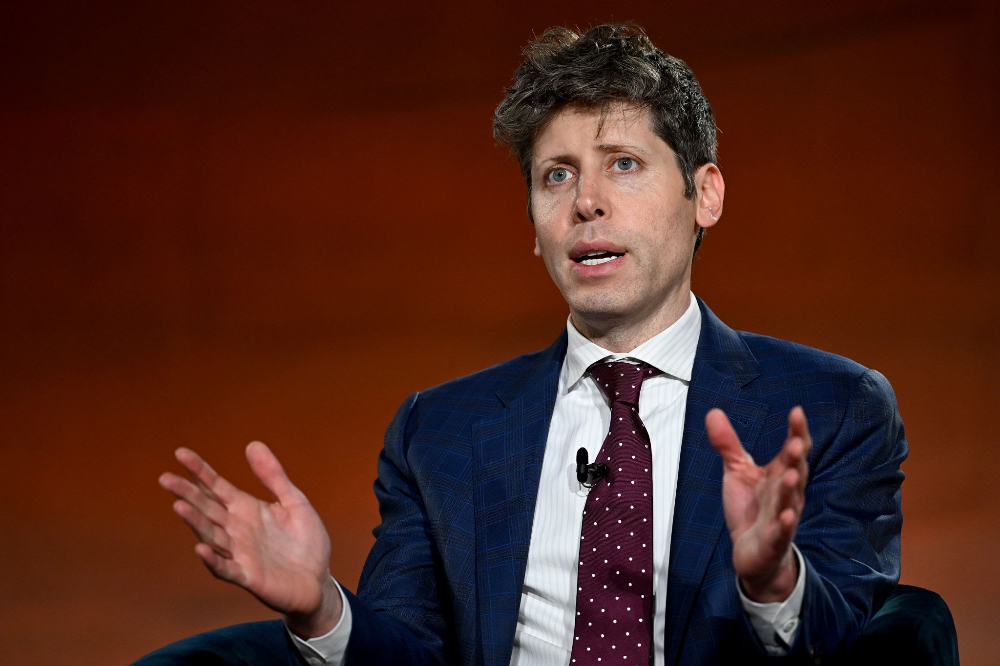
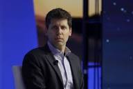

Samuel Harris Altman (Chicago, Illinois; 22 de abril de 1985), conocido como Sam Altman, es un empresario, inversionista, programador y bloguero estadounidense. Es director ejecutivo de OpenAI y expresidente de Y Combinator, y se le considera una de las figuras principales en el desarrollo de la inteligencia artificial. Su patrimonio neto actual es de 2100 millones de dólares, de acuerdo con Forbes.

En 2005, a los diecinueve años, Altman cofundó y se convirtió en director ejecutivo de Loopt, una aplicación móvil de redes sociales basada en la ubicación. Después de recaudar más de $30 millones en capital de riesgo, Loopt se cerró en 2012 después de no poder obtener tracción. Fue adquirida por Green Dot Corporation por $43.4 millones.